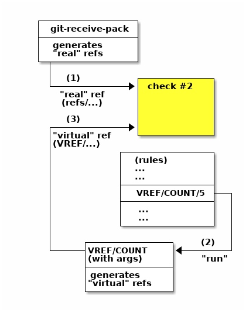

virtual refs
VREFs are a mechanism to add additional constraints to a push.
They are also the simplest way to add your old update hooks to gitolite -- they'll just work, no coding changes needed. If that's all you need, you should head over to the cookbook and look for the section on "adding your own update hooks".
IMPORTANT:
Fallthru is success in VREFs, unlike for normal refs. That won't make sense until you read further, but I had to put it up here for folks who stop reading halfway!
quick intro/example
Here's an example to start you off.
To disallow junior developers from changing more than five files, or from touching the Makefile, you can do this:
repo foo RW+ = @all-devs - VREF/COUNT/5 = @junior-devs - VREF/NAME/Makefile = @junior-devs
Here's a pictorial representation of what happens, at a very high level, based
on the VREF/COUNT/5 rule in the rule list above.

-
To start with, git-receive-pack calls the update hook with what we will call a "real" ref, something like "refs/heads/master", or "refs/tags/v1.0" -- in general, something that starts with "refs/".
This ref is sent through "check #2" (please click to refresh your memory if needed).
Any rules that specify a refex starting with "VREF/" clearly won't match and are ignored in this check.
-
Assuming that check did not fail, the gitolite code in the update hook then starts looking at each "VREF" rule in the rule list that applies to that repo accessed by that user. For each one, it runs the actual VREF program whose name is given in the word after
VREF/. (The rest of the words, if any, along with all sorts of other information, are supplied as arguments). -
The STDOUT of the called program is captured and any line that starts with the characters
VREF/is taken as a "virtual" ref, and is run through the same "check #2". The only difference is that, unlike for a regular ref, fallthru does not result in failure, but success.
basic use and understanding
Normally, rules deal with branches and tags (which git collectively calls "refs"). The "ref" is a property of the push which gitolite checks against the set of rules.
"Virtual refs" are other properties of a push that gitolite can be told to
check, in addition to the normal ref. For example, "this push has more than 5
changed files" could be one property. Or "this push changed the file called
Makefile" could be another. These properties are represented as "virtual
refs" that start with VREF/. (Recall that "normal" refs start with
refs/).
The simplest way to use them is as additional "deny" rules to fail a push that might otherwise have passed. This is what the example at the top shows.
It helps to separate VREF rules from normal rules, since no access rule can match both a normal ref and a virtual ref. Here's a good way to structure your rules:
-
Put your normal ref rules first. These apply to the branch name or tag name that git itself knows about and sends to gitolite's update hook.
Fallthru is failure here, which means the ref being pushed must match some rule in this set for the push to succeed.
-
Put your VREF rules next. These apply to the virtual refs you want to use as additional checks for the push.
Fallthru is success here, which means the (virtual) ref must be explicitly denied in order for the push to fail.
advanced use
More complex uses are possible, but may be harder to understand. You may want to experiment with the rules to solidify your understanding as you read this.
differences from normal refs
We know where normal refs (like refs/heads/master or refs/tags/v1.0) come
from -- they are supplied by git itself when it calls the update hook.
Virtual refs have two differences with normal refs:
- Gitolite has to generate them somehow.
- Fallthru is success, not failure.
Here's how it works.
-
First, the normal ("real") ref is checked.
As you already know, the push dies if the ref hits a deny rule or it falls through without hitting an allow rule.
-
Next, virtual refs are generated and checked one by one.
We'll talk about the generaton later, but for the check, a virtual ref kills the push only if it meets an explicit deny rule ("-"); fallthru does not cause failure. Other than that, the checking is done the same way as for a normal ref, viz., as described in the flow for check #2.
generating virtual refs
Gitolite uses the VREF rules themselves to help it generate the virtual refs.
Specifically, it looks at each rule that contains a VREF (there are 2 in the above example) and calls a VREF-maker for each of them.
We'll take the COUNT example rule above.
When gitolite sees that rule, it calls the "COUNT" VREF-maker. Specifically,
this is the VREF/COUNT program (See here for actual locations on
disk).
Gitolite passes it the string "5" as an argument (actually, as the eighth argument; details later).
The program (which can be written in any language) is expected to do one of two things:
-
If the condition is satisfied (i.e., there are more than 5 files in this push), it should print
VREF/COUNT/5to STDOUT.You can see that when this virtual ref is processed through the rules, it will encounter the "deny" rule, and thus kill the push.
-
Otherwise it should print nothing. That is, there is no virtual ref to run through "check #2", so nothing happens.
It should exit with an exit code of zero in either case.
If it exits with a non-zero, the push dies regardless of what is printed (see "mimicking a plain old update hook" for why this is useful).
more details and nuances
mimicking a plain old update hook
If the VREF maker exits with a non-zero exit code, then regardless of what it prints or does not, the push dies.
This is just like a plain 'update' hook. Since the first 3 arguments (see later) are also the same that a plain 'update' hook receives, you can actually use any existing update hook as a VREF-maker.
To repurpose an existing update hook as a VREF-maker, just copy it to the VREF directory (again, see here for actual locations on disk). Then add this rule to your repos:
repo foo # or maybe even 'repo @all' - VREF/my-update-hook = @all
That's it.
what if the VREF-maker prints a different virtual ref?
Unless you know what you're upto, don't do that.
But it's allowed and the behaviour is defined. The VREF-maker for the NAME VREF is a good example. It ignores the arguments and just makes VREFs out of the name of every file that was changed in the push.
Here's another example. Consider the problem of not allowing pushes at specific times. Let's say repo 'foo' cannot be pushed between 4 and 7pm, and repo 'bar' can only be pushed before 9am. And of course all this only applies to the junior developers, the poor guys!
In this example, we write the "Hour" VREF-maker to ignore the argument
passed and just print VREF/Hour/NN where NN can be between 00 to 23
inclusive and of course represents the current hour.
If foo is pushed at 6:30pm, the VREF-maker prints VREF/Hour/18, which satisfies the third rule and is rejected.
If bar is pushed at, say, 7:20am, the vref printed is VREF/Hour/07, which does not match any of the rules. And fallthru is success so it passes.
repo foo RW+ = @all - VREF/Hour/16 = @junior-devs - VREF/Hour/17 = @junior-devs - VREF/Hour/18 = @junior-devs repo bar RW+ = @all - VREF/Hour/09 = @junior-devs - VREF/Hour/1[0-9] = @junior-devs - VREF/Hour/2[0-9] = @junior-devs
why is fallthru considered success with VREFs
Virtual refs are best used (1) as additional "deny" rules, performing extra checks that core gitolite cannot. You usually want such extra checks only for some people.
When fallthru is success, you can simply ignore all the other users (for whom such additional checks are not needed).
If fallthru were to be considered 'failure', you'd be forced to add a "success rule" like this for every virtual ref you used in this repo, in each case listing every user who was not already mentioned in the context of that vref:
RW+ VREF/VREFNAME = @userlist # uggh! what a pain!
Worse, since every virtual ref involves calling an external program, many of these calls may be wasted.
(1) "best used as..." does not mean "only used as...". For example it's perfectly easy to turn this around if, instead of having a list of people who do need extra checks, all you have is the complementary list:
RW+ VREF/NAME/Makefile = @senior-devs
- VREF/NAME/Makefile = @all
what if the VREF-maker prints something that's not even a virtual ref?
The VREF-maker can print anything it wants to STDOUT. Lines not starting with
VREF/ are printed as is (so your VREF-maker can do mostly-normal printing to
STDOUT). This is especially useful if you've turned an existing update hook
into a VREF-maker, and it prints stuff meant for the user, but you don't want
to touch the code.
For lines starting with VREF/, the first word in each such line will be
treated as a virtual ref, while the rest, if any, is a message to be added to
the standard "...DENIED..." message that gitolite will print if that refex
matches and the rule is a deny rule.
in what order are VREF-makers called?
VREF-makers are called in the sequence in which they appear in the conf file.
There are some optimisations to prevent calling the same VREF-maker with the same arguments more than once, and the VREF-maker code for the NAME VREF (which is special) is called only once regardless of how many times it appears but these details should not concern anyone but a developer.
what arguments are passed to the vref-maker?
-
Arguments 1, 2, 3: the
ref,oldsha, andnewshathat git passed to the update hook (seeman githooks).This, combined with the fact that non-zero exits are detected, mean that you can simply use an existing update.secondary as a VREF-maker as-is, no changes needed.
-
Arguments 4 and 5: the 'oldtree' and 'newtree' SHAs. These are the same as the oldsha and newsha values, except if one of them is all-0. (indicating a ref creation or deletion). In that case the corresponding 'tree' SHA is set (by gitolite, as a courtesy) to the special SHA
4b825dc642cb6eb9a060e54bf8d69288fbee4904, which is the hash of an empty tree.(None of these shenanigans would have been needed if
git diff $oldsha $newshawould not error out when passed an all-0 SHA.) -
Argument 6: the attempted access flag. Typically
Wor+, but could also beC,D, or any of these 4 followed byM. If you have to ask what they mean, you haven't read enough gitolite documentation to be able to make virtual refs work. -
Argument 7: is the entire refex; say
VREF/COUNT/3/NEWFILES. -
Arguments 8 onward: are the split out (by
/) portions of the refex, excluding the first two components. In our example they would be3followed byNEWFILES.
Yes, argument 7 is redundant if you have 8 and 9. It's just more convenient for scripts to have both available, without having to split/join.